Imposta di successione: beni esclusi ed esenzioni dopo la riforma
Non tutto il patrimonio ereditario sconta l'imposta di successione. Il Testo Unico (D.lgs. 346/1990) prevede esclusioni oggettive ed esenzioni mirate, dai titoli del debito pubblic…

Confisca per equivalente dei reati tributari: come difendere la casa
Il contribuente condannato per un reato tributario può vedersi sequestrare e confiscare l'abitazione a titolo di equivalente. La misura, però, incontra limiti: il principio di prop…

Clausola arbitrale nel regolamento condominiale: si può impugnare la delibera davanti agli arbitri?
Alcuni regolamenti condominiali contengono una clausola che impone di risolvere le controversie tramite arbitri anziché davanti al giudice. Capire se e quando tale clausola vincola…

Controlli difensivi sul dipendente: quando sono legittimi oltre lo Statuto
Il datore di lavoro può verificare la condotta di un dipendente anche affidandosi a soggetti esterni e al di fuori delle garanzie dello Statuto dei lavoratori? Una recente pronunci…

Sentenze false generate dall'AI nel ricorso: la responsabilità resta dell'avvocato
Una recente pronuncia della Cassazione penale ha condannato un avvocato al pagamento di una somma alla Cassa delle ammende per aver citato in un ricorso precedenti giurisprudenzial…

Il dono "minimo" al pubblico ufficiale: quando scatta la corruzione
Un caffè, un pranzo, un piccolo omaggio a chi riveste una funzione pubblica: gesti che sembrano innocui possono assumere rilievo penale. La giurisprudenza è costante nel ritenere c…

Fideiussore e concessione abusiva di credito: le eccezioni opponibili
La Cassazione affronta un tema sensibile per chi presta garanzie: può il fideiussore difendersi eccependo che la banca ha concesso o mantenuto il credito in modo abusivo? La rispos…

Contestare la CTU oltre il termine: cosa resta possibile
In una causa per vizi di un appalto, il nodo non è solo la relazione del consulente tecnico, ma fino a quando la si può contestare. La Cassazione distingue tra critiche al merito, …

Impugnazione della delibera condominiale: ciascun coniuge comproprietario può agire da solo
Una recente pronuncia del Tribunale di Nocera Inferiore ha dichiarato nulla una delibera che modificava i criteri di ripartizione delle spese e ha riconosciuto a ciascun coniuge co…

Licenziamento per illeciti extralavorativi e immediatezza della contestazione
Il datore di lavoro può attendere la condanna penale definitiva prima di licenziare per fatti commessi fuori dal rapporto di lavoro? La risposta dipende dalla disciplina contrattua…

Mansarda e sopraelevazione: quando la trasformazione del sottotetto rientra nell'art. 1127 c.c.
Trasformare una mansarda in vano abitabile, senza modificare l'altezza del tetto, può comunque integrare una sopraelevazione ai sensi dell'art. 1127 c.c. Secondo la giurisprudenza …
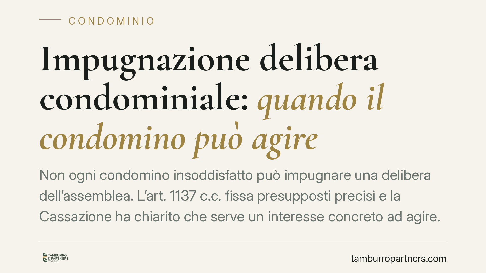
Impugnazione delibera condominiale: quando il condomino può agire
Non ogni condomino insoddisfatto può impugnare una delibera dell'assemblea. L'art. 1137 c.c. fissa presupposti precisi e la Cassazione ha chiarito che serve un interesse concreto a…
Intelligenza artificiale e diritto del lavoro: obblighi e limiti
L'uso di sistemi di intelligenza artificiale per selezionare, monitorare e gestire il personale è ormai diffuso. Il quadro normativo esiste già: Decreto Trasparenza, GDPR e AI Act …
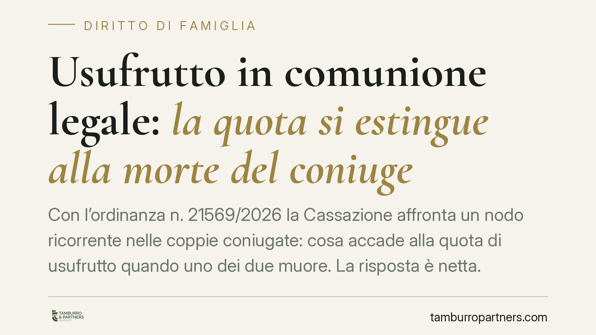
Usufrutto in comunione legale: la quota si estingue alla morte del coniuge
Con l'ordinanza n. 21569/2026 la Cassazione affronta un nodo ricorrente nelle coppie coniugate: cosa accade alla quota di usufrutto quando uno dei due muore. La risposta è netta. Q…
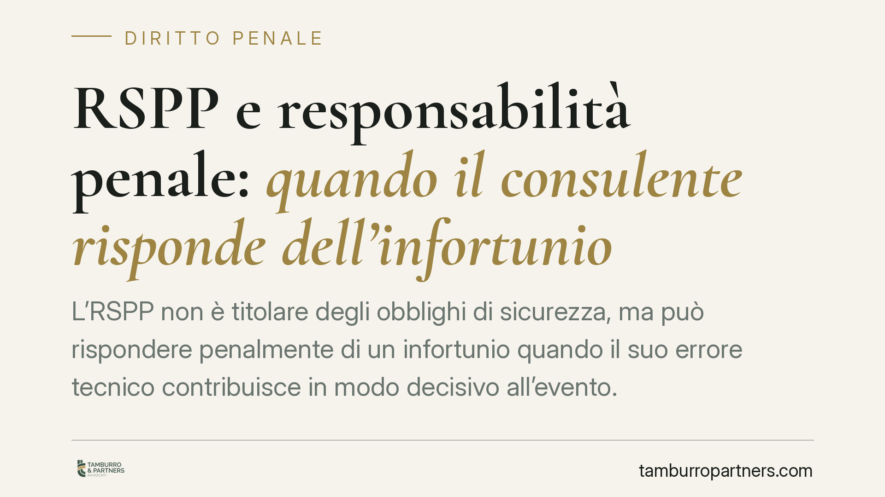
RSPP e responsabilità penale: quando il consulente risponde dell'infortunio
L'RSPP non è titolare degli obblighi di sicurezza, ma può rispondere penalmente di un infortunio quando il suo errore tecnico contribuisce in modo decisivo all'evento. La giurispru…
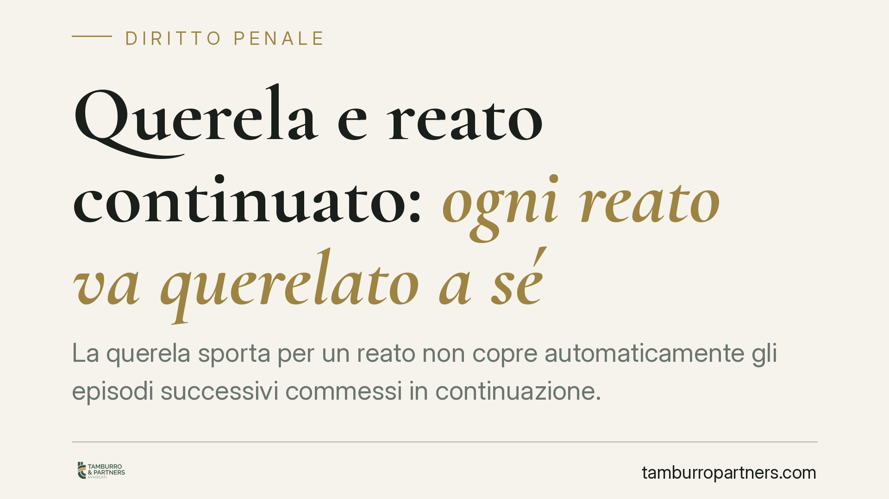
Querela e reato continuato: ogni reato va querelato a sé
La querela sporta per un reato non copre automaticamente gli episodi successivi commessi in continuazione. Secondo un orientamento della Cassazione penale, ogni reato resta autonom…
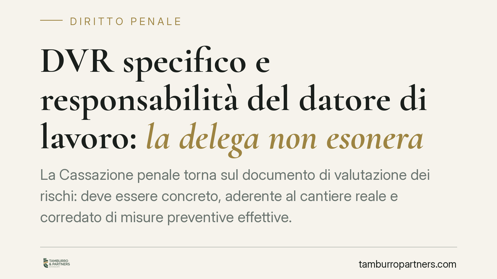
DVR specifico e responsabilità del datore di lavoro: la delega non esonera
La Cassazione penale torna sul documento di valutazione dei rischi: deve essere concreto, aderente al cantiere reale e corredato di misure preventive effettive. Affidarne la stesur…
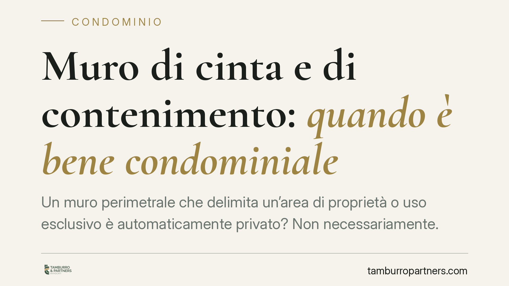
Muro di cinta e di contenimento: quando è bene condominiale
Un muro perimetrale che delimita un'area di proprietà o uso esclusivo è automaticamente privato? Non necessariamente. Secondo l'orientamento consolidato della Cassazione, ciò che c…
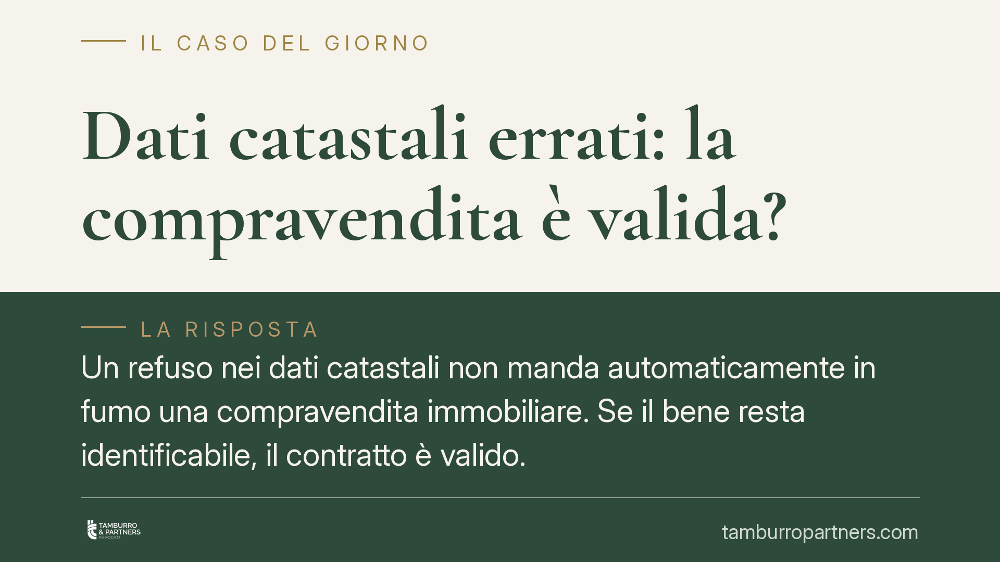
Dati catastali errati: la compravendita è valida?
Un refuso nei dati catastali non manda automaticamente in fumo una compravendita immobiliare. Se il bene resta identificabile, il contratto è valido. Ma il venditore può comunque r…
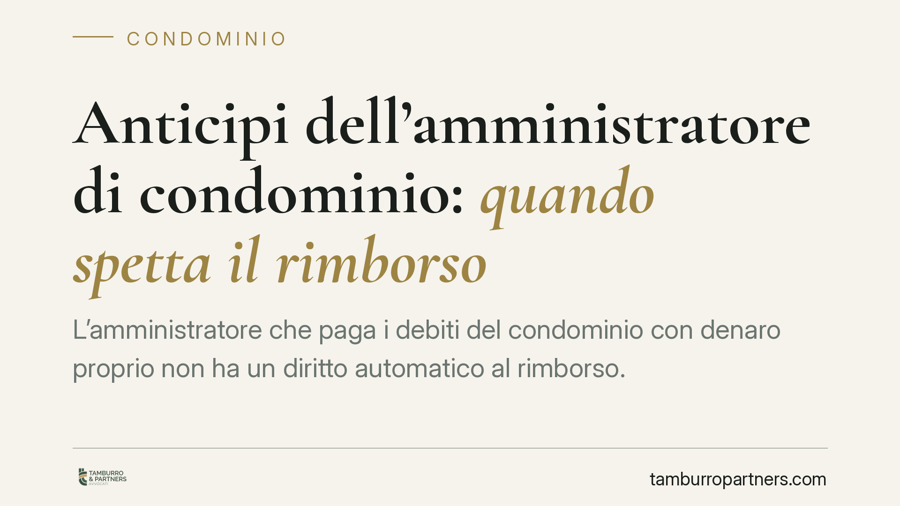
Anticipi dell'amministratore di condominio: quando spetta il rimborso
L'amministratore che paga i debiti del condominio con denaro proprio non ha un diritto automatico al rimborso. Una recente pronuncia della Cassazione lega il recupero delle somme a…
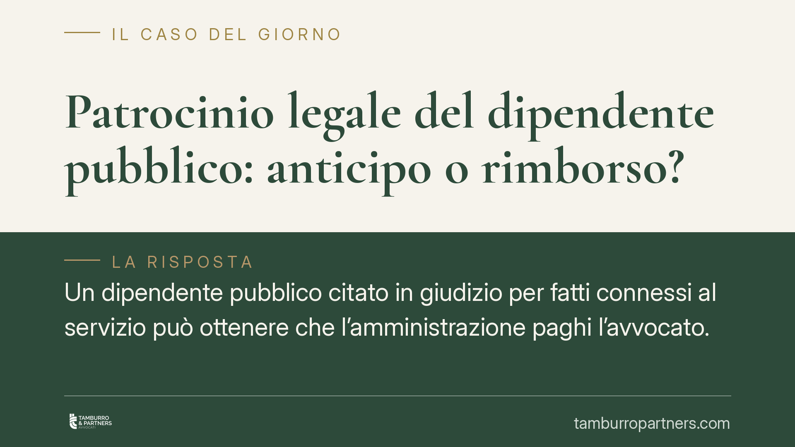
Patrocinio legale del dipendente pubblico: anticipo o rimborso?
Un dipendente pubblico citato in giudizio per fatti connessi al servizio può ottenere che l'amministrazione paghi l'avvocato. Ma l'anticipo immediato non è automatico: dipende dall…
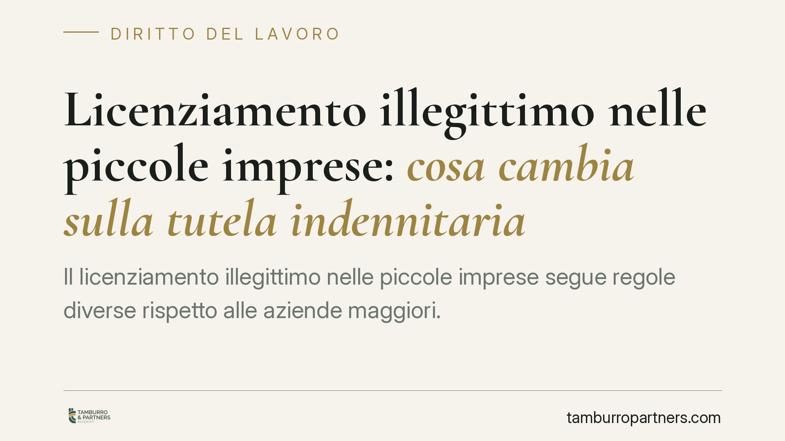
Licenziamento illegittimo nelle piccole imprese: cosa cambia sulla tutela indennitaria
Il licenziamento illegittimo nelle piccole imprese segue regole diverse rispetto alle aziende maggiori. Comprendere la soglia dimensionale, la data di assunzione e il regime applic…
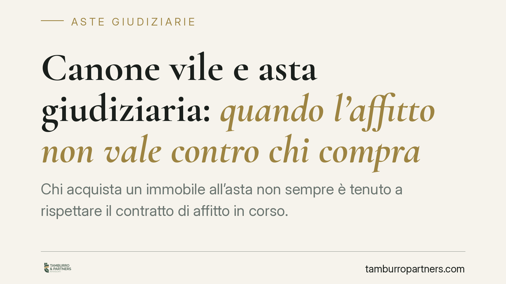
Canone vile e asta giudiziaria: quando l'affitto non vale contro chi compra
Chi acquista un immobile all'asta non sempre è tenuto a rispettare il contratto di affitto in corso. Se il canone è troppo basso rispetto al valore di mercato, la locazione può ess…
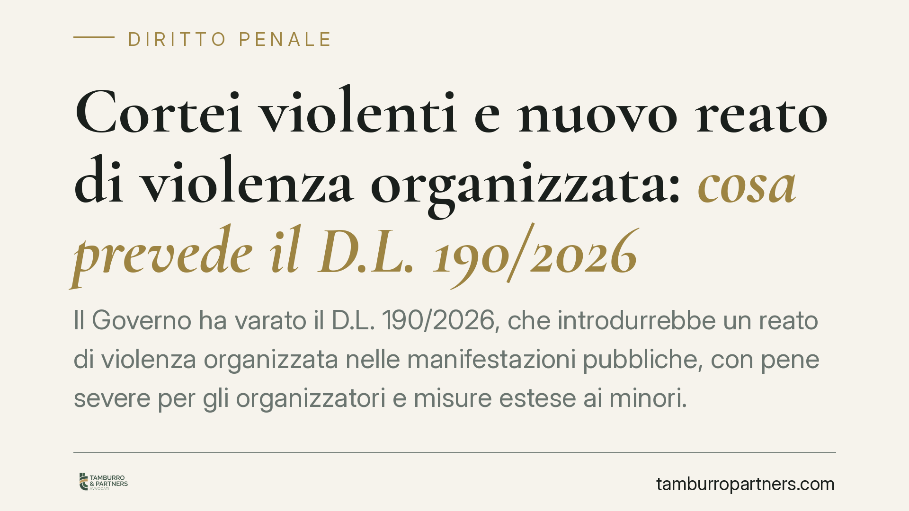
Cortei violenti e nuovo reato di violenza organizzata: cosa prevede il D.L. 190/2026
Il Governo ha varato il D.L. 190/2026, che introdurrebbe un reato di violenza organizzata nelle manifestazioni pubbliche, con pene severe per gli organizzatori e misure estese ai m…
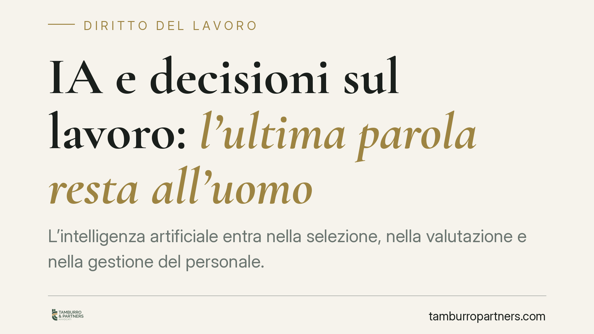
IA e decisioni sul lavoro: l'ultima parola resta all'uomo
L'intelligenza artificiale entra nella selezione, nella valutazione e nella gestione del personale. Ma può un algoritmo decidere da solo un licenziamento o una sanzione? La normati…
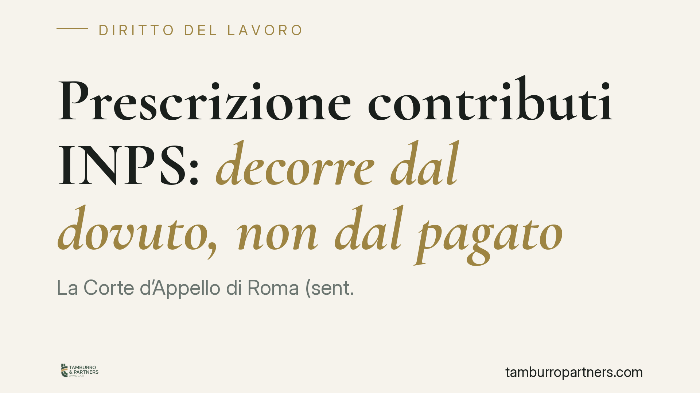
Prescrizione contributi INPS: decorre dal dovuto, non dal pagato
La Corte d'Appello di Roma (sent. 2995/2026) fissa un principio netto: i contributi previdenziali si prescrivono in cinque anni dal momento in cui la retribuzione avrebbe dovuto es…
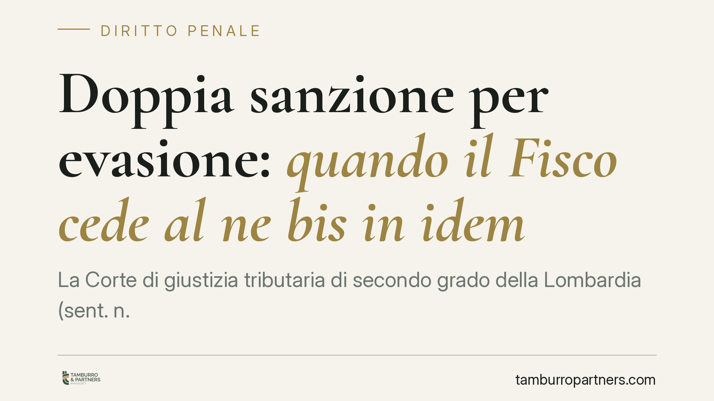
Doppia sanzione per evasione: quando il Fisco cede al ne bis in idem
La Corte di giustizia tributaria di secondo grado della Lombardia (sent. n. 1586/2026) ha annullato le sanzioni amministrative irrogate a un imprenditore già condannato in sede pen…
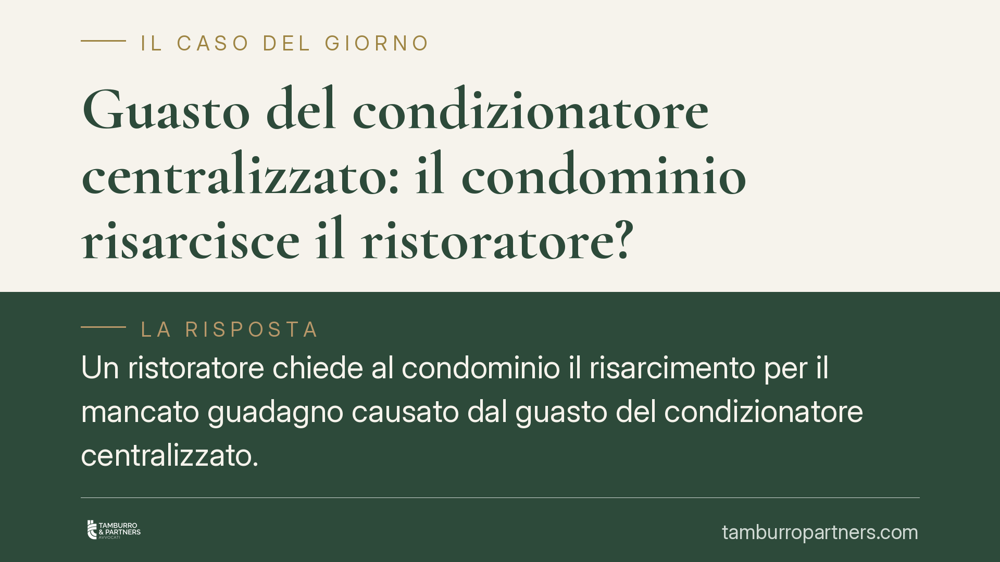
Guasto del condizionatore centralizzato: il condominio risarcisce il ristoratore?
Un ristoratore chiede al condominio il risarcimento per il mancato guadagno causato dal guasto del condizionatore centralizzato. Una recente pronuncia della Corte d'Appello di Peru…
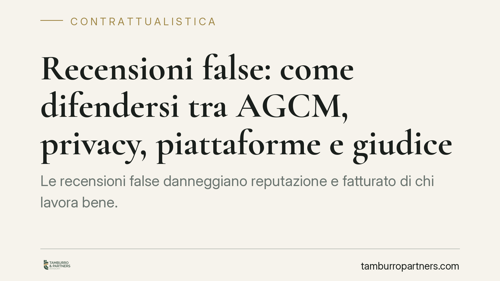
Recensioni false: come difendersi tra AGCM, privacy, piattaforme e giudice
Le recensioni false danneggiano reputazione e fatturato di chi lavora bene. L'ordinamento offre più strumenti, con effetti diversi: alcuni puntano a far rimuovere il contenuto, alt…
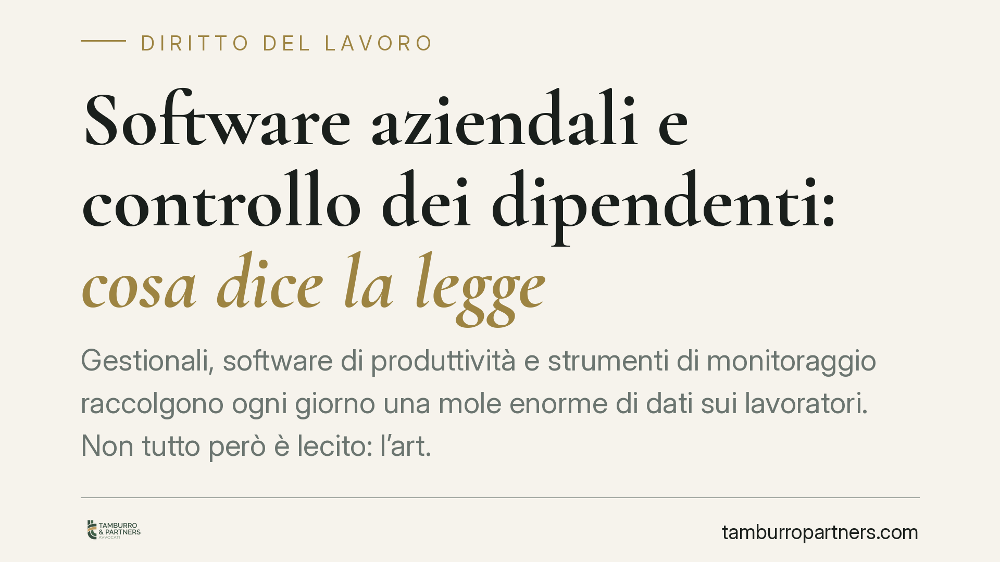
Software aziendali e controllo dei dipendenti: cosa dice la legge
Gestionali, software di produttività e strumenti di monitoraggio raccolgono ogni giorno una mole enorme di dati sui lavoratori. Non tutto però è lecito: l'art. 4 dello Statuto dei …